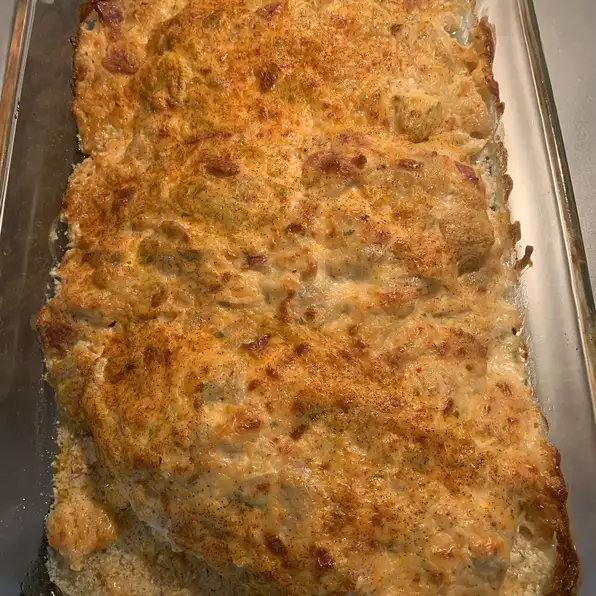

Artichoke Chicken

The most flavorful chicken
This artichoke chicken is the most flavorful chicken you will ever have in your life. It melts in your mouth and is to die for!
Ingredients
- cooking spray
- 1 (15 ounce) can artichoke hearts, drained and chopped
- ¾ cup grated Parmesan cheese
- ¾ cup mayonnaise
- 1 pinch garlic pepper
- 4 skinless, boneless chicken breast halves
Steps
- Preheat the oven to 375 degrees F (190 degrees C). Grease a baking dish with cooking spray.
- Mix together artichoke hearts, Parmesan cheese, mayonnaise, and garlic pepper in a medium bowl. Place chicken in the prepared baking dish; cover chicken evenly with artichoke mixture.
- Bake, uncovered, in the preheated oven until chicken is no longer pink in the center and juices run clear, about 30 minutes. An instant-read thermometer inserted into the center should read at least 165 degrees F (74 degrees C).